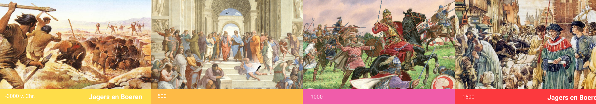
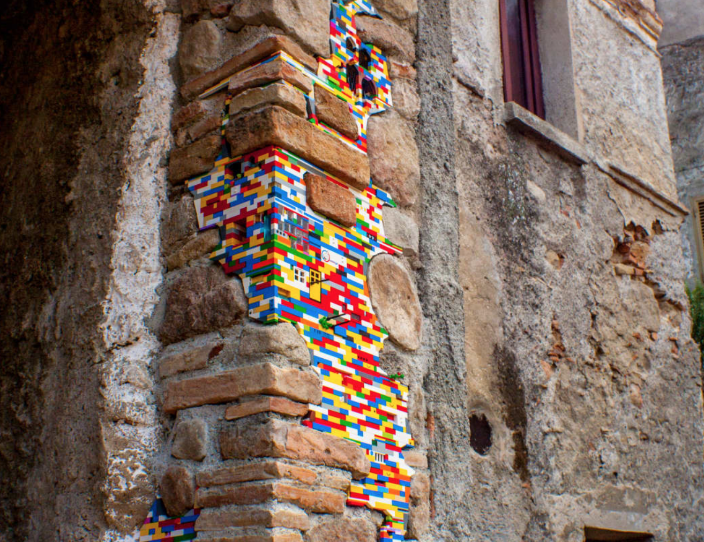

Aanleiding
In het onderstaande zie je de opdrachten vanuit het onderwerp AR & VR. Tijdens de lezing werden verschillende toepassingen van virtuele en augmented reality getoond. Maak hierbij drie concepten, die betrekking hebben op het onderwerp AR of VR. Selecteer 3 toepassingsgebied. Ik heb voor de volgende onderwerpen gekozen: Onderwijs, angst therapie en musea.
Thema Educatie Een kind stapt in de wereld van de geschiedenis. Hierbij wordt er een tijdlijn weergeven van alle jaren. Er is een keuze om je te specialiseren over elk onderwerp of tijd. De tijdlijn is een chronologische volgorde visueel weergeven. De Visuals zijn bewegende beelden die met elkaar verbonden zijn. Zodat er een goed beeld is van het proces de jaren. Hierbij wordt bijvoorbeeld zichtbaar dat er eerst ongeschreven bronnen zijn en vervolgens geschreven bronnen zijn gekomen. Product Tijdmachine, waar alle informatie staat over de geschiedenis. Doel Het doel van dit concept is om het vak geschiedenis meer levend te maken en interesse bij de kinderen op te wekken. Door middel van zelf in de wereld te stappen, zullen zij de tijden anders ervaren. Bereiken Dat alle kinderen van verschillende leeftijden en niveaus meer kennis krijgen over de geschiedenis. Door het visueel weer te geven, ook meer overzicht.
 Concept tijdmachine  Playful Interaction Playful Interaction
Playful Interaction